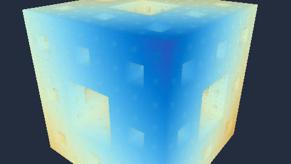

HomeAccueil / ExamplesExemples
Menger spongeÉponge de Menger
Distance function of the sponge by repeatedly subtracting crosses; the camera orbits around it.Fonction de distance de l'éponge par soustraction répétée de croix ; la caméra tourne autour.

CategoryCatégorie: Ray marchingRay marching - eponge_menger.glsl - 32 lineslignes - File on GitHubFichier sur GitHub
In the program: Examples, choose it, Add to the list. Or copy the code into a file next to the program and drop it on the window.Dans le programme : Exemples, choisissez-le, Ajouter à la liste. Ou copiez le code dans un fichier et glissez-le sur la fenêtre.
CodeCode
eponge_menger.glsl
// SPDX-License-Identifier: LicenseRef-ShaderToMP4-Proprietary
// Copyright (C) 2026 Patrick JAILLET. Tous droits reserves.
// fr: Éponge de Menger — Fonction de distance de l'éponge par soustraction répétée de croix ; la caméra tourne autour.
// en: Menger sponge — Distance function of the sponge by repeatedly subtracting crosses; the camera orbits around it.
float sdBox(vec3 p, vec3 b) { vec3 q = abs(p) - b; return length(max(q, 0.0)) + min(max(q.x, max(q.y, q.z)), 0.0); }
float map(vec3 p) {
float d = sdBox(p, vec3(1.0));
float s = 1.0;
for (int i = 0; i < 4; i++) {
vec3 a = mod(p * s, 2.0) - 1.0;
s *= 3.0;
vec3 r = abs(1.0 - 3.0 * abs(a));
float c = (min(max(r.x, r.y), min(max(r.y, r.z), max(r.z, r.x))) - 1.0) / s;
d = max(d, c);
}
return d;
}
void mainImage(out vec4 fragColor, in vec2 fragCoord) {
vec2 uv = (fragCoord - 0.5 * iResolution.xy) / iResolution.y;
float a = iTime * 0.3;
vec3 ro = 3.2 * vec3(sin(a), 0.5, cos(a));
vec3 f = normalize(-ro), r = normalize(cross(vec3(0, 1, 0), f)), u = cross(f, r);
vec3 rd = normalize(f * 1.6 + r * uv.x + u * uv.y);
float t = 0.0, it = 0.0;
for (int i = 0; i < 90; i++) { float d = map(ro + rd * t); if (d < 0.0008 || t > 8.0) break; t += d; it += 1.0; }
vec3 col = vec3(0.02, 0.03, 0.06);
if (t < 8.0) col = (0.5 + 0.5 * cos(t * 1.5 + vec3(0.0, 1.0, 2.0))) * (1.0 - it / 90.0);
fragColor = vec4(pow(col, vec3(0.5)), 1.0);
}